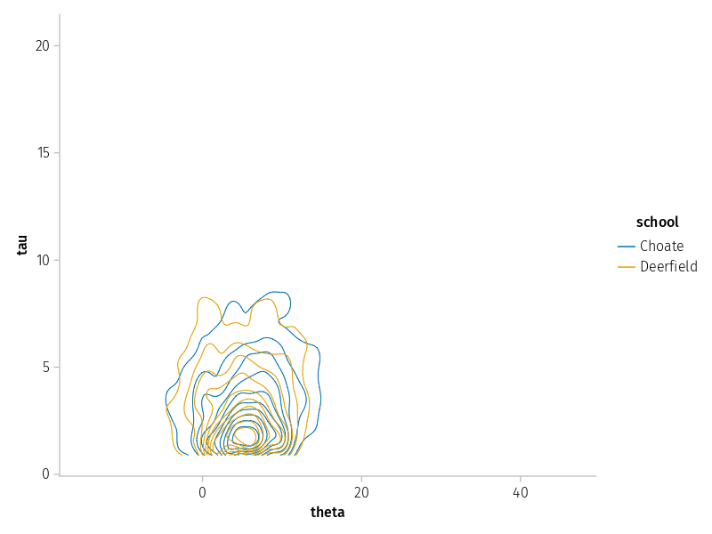

Creating custom plots
While ArviZ includes many plotting functions for visualizing the data stored in InferenceData objects, you will often need to construct custom plots, or you may want to tweak some of our plots in your favorite plotting package.
In this tutorial, we will show you a few useful techniques you can use to construct these plots using Julia’s plotting packages. For demonstration purposes, we’ll use Makie.jl and AlgebraOfGraphics.jl, which can consume Dataset objects since they implement the Tables interface. However, we could just as easily have used StatsPlots.jl.
using ArviZ, DimensionalData, DataFrames, Statistics, AlgebraOfGraphics, CairoMakie
using AlgebraOfGraphics: density
set_aog_theme!()/home/runner/.julia/conda/3/x86_64/lib/python3.10/site-packages/scipy/__init__.py:146: UserWarning: A NumPy version >=1.17.3 and <1.25.0 is required for this version of SciPy (detected version 1.25.0
warnings.warn(f"A NumPy version >={np_minversion} and <{np_maxversion}"We’ll start by loading some draws from an implementation of the non-centered parameterization of the 8 schools model. In this parameterization, the model has some sampling issues.
idata = load_example_data("centered_eight")posterior
Dataset with dimensions:
Dim{:draw} Sampled{Int64} Int64[0, 1, …, 498, 499] ForwardOrdered Irregular Points,
Dim{:chain} Sampled{Int64} Int64[0, 1, 2, 3] ForwardOrdered Irregular Points,
Dim{:school} Categorical{String} String[Choate, Deerfield, …, St. Paul's, Mt. Hermon] Unordered
and 3 layers:
:mu Float64 dims: Dim{:draw}, Dim{:chain} (500×4)
:theta Float64 dims: Dim{:school}, Dim{:draw}, Dim{:chain} (8×500×4)
:tau Float64 dims: Dim{:draw}, Dim{:chain} (500×4)
with metadata Dict{String, Any} with 6 entries:
"created_at" => "2022-10-13T14:37:37.315398"
"inference_library_version" => "4.2.2"
"sampling_time" => 7.48011
"tuning_steps" => 1000
"arviz_version" => "0.13.0.dev0"
"inference_library" => "pymc"posterior_predictive
Dataset with dimensions:
Dim{:school} Categorical{String} String[Choate, Deerfield, …, St. Paul's, Mt. Hermon] Unordered,
Dim{:draw} Sampled{Int64} Int64[0, 1, …, 498, 499] ForwardOrdered Irregular Points,
Dim{:chain} Sampled{Int64} Int64[0, 1, 2, 3] ForwardOrdered Irregular Points
and 1 layer:
:obs Float64 dims: Dim{:school}, Dim{:draw}, Dim{:chain} (8×500×4)
with metadata Dict{String, Any} with 4 entries:
"created_at" => "2022-10-13T14:37:41.460544"
"inference_library_version" => "4.2.2"
"arviz_version" => "0.13.0.dev0"
"inference_library" => "pymc"log_likelihood
Dataset with dimensions:
Dim{:school} Categorical{String} String[Choate, Deerfield, …, St. Paul's, Mt. Hermon] Unordered,
Dim{:draw} Sampled{Int64} Int64[0, 1, …, 498, 499] ForwardOrdered Irregular Points,
Dim{:chain} Sampled{Int64} Int64[0, 1, 2, 3] ForwardOrdered Irregular Points
and 1 layer:
:obs Float64 dims: Dim{:school}, Dim{:draw}, Dim{:chain} (8×500×4)
with metadata Dict{String, Any} with 4 entries:
"created_at" => "2022-10-13T14:37:37.487399"
"inference_library_version" => "4.2.2"
"arviz_version" => "0.13.0.dev0"
"inference_library" => "pymc"sample_stats
Dataset with dimensions:
Dim{:draw} Sampled{Int64} Int64[0, 1, …, 498, 499] ForwardOrdered Irregular Points,
Dim{:chain} Sampled{Int64} Int64[0, 1, 2, 3] ForwardOrdered Irregular Points
and 16 layers:
:max_energy_error Float64 dims: Dim{:draw}, Dim{:chain} (500×4)
:energy_error Float64 dims: Dim{:draw}, Dim{:chain} (500×4)
:lp Float64 dims: Dim{:draw}, Dim{:chain} (500×4)
:index_in_trajectory Int64 dims: Dim{:draw}, Dim{:chain} (500×4)
:acceptance_rate Float64 dims: Dim{:draw}, Dim{:chain} (500×4)
:diverging Bool dims: Dim{:draw}, Dim{:chain} (500×4)
:process_time_diff Float64 dims: Dim{:draw}, Dim{:chain} (500×4)
:n_steps Float64 dims: Dim{:draw}, Dim{:chain} (500×4)
:perf_counter_start Float64 dims: Dim{:draw}, Dim{:chain} (500×4)
:largest_eigval Union{Missing, Float64} dims: Dim{:draw}, Dim{:chain} (500×4)
:smallest_eigval Union{Missing, Float64} dims: Dim{:draw}, Dim{:chain} (500×4)
:step_size_bar Float64 dims: Dim{:draw}, Dim{:chain} (500×4)
:step_size Float64 dims: Dim{:draw}, Dim{:chain} (500×4)
:energy Float64 dims: Dim{:draw}, Dim{:chain} (500×4)
:tree_depth Int64 dims: Dim{:draw}, Dim{:chain} (500×4)
:perf_counter_diff Float64 dims: Dim{:draw}, Dim{:chain} (500×4)
with metadata Dict{String, Any} with 6 entries:
"created_at" => "2022-10-13T14:37:37.324929"
"inference_library_version" => "4.2.2"
"sampling_time" => 7.48011
"tuning_steps" => 1000
"arviz_version" => "0.13.0.dev0"
"inference_library" => "pymc"prior
Dataset with dimensions:
Dim{:draw} Sampled{Int64} Int64[0, 1, …, 498, 499] ForwardOrdered Irregular Points,
Dim{:chain} Sampled{Int64} Int64[0] ForwardOrdered Irregular Points,
Dim{:school} Categorical{String} String[Choate, Deerfield, …, St. Paul's, Mt. Hermon] Unordered
and 3 layers:
:tau Float64 dims: Dim{:draw}, Dim{:chain} (500×1)
:theta Float64 dims: Dim{:school}, Dim{:draw}, Dim{:chain} (8×500×1)
:mu Float64 dims: Dim{:draw}, Dim{:chain} (500×1)
with metadata Dict{String, Any} with 4 entries:
"created_at" => "2022-10-13T14:37:26.602116"
"inference_library_version" => "4.2.2"
"arviz_version" => "0.13.0.dev0"
"inference_library" => "pymc"prior_predictive
Dataset with dimensions:
Dim{:school} Categorical{String} String[Choate, Deerfield, …, St. Paul's, Mt. Hermon] Unordered,
Dim{:draw} Sampled{Int64} Int64[0, 1, …, 498, 499] ForwardOrdered Irregular Points,
Dim{:chain} Sampled{Int64} Int64[0] ForwardOrdered Irregular Points
and 1 layer:
:obs Float64 dims: Dim{:school}, Dim{:draw}, Dim{:chain} (8×500×1)
with metadata Dict{String, Any} with 4 entries:
"created_at" => "2022-10-13T14:37:26.604969"
"inference_library_version" => "4.2.2"
"arviz_version" => "0.13.0.dev0"
"inference_library" => "pymc"observed_data
Dataset with dimensions:
Dim{:school} Categorical{String} String[Choate, Deerfield, …, St. Paul's, Mt. Hermon] Unordered
and 1 layer:
:obs Float64 dims: Dim{:school} (8)
with metadata Dict{String, Any} with 4 entries:
"created_at" => "2022-10-13T14:37:26.606375"
"inference_library_version" => "4.2.2"
"arviz_version" => "0.13.0.dev0"
"inference_library" => "pymc"constant_data
Dataset with dimensions:
Dim{:school} Categorical{String} String[Choate, Deerfield, …, St. Paul's, Mt. Hermon] Unordered
and 1 layer:
:scores Float64 dims: Dim{:school} (8)
with metadata Dict{String, Any} with 4 entries:
"created_at" => "2022-10-13T14:37:26.607471"
"inference_library_version" => "4.2.2"
"arviz_version" => "0.13.0.dev0"
"inference_library" => "pymc"idata.posteriorDataset with dimensions:
Dim{:draw} Sampled{Int64} Int64[0, 1, …, 498, 499] ForwardOrdered Irregular Points,
Dim{:chain} Sampled{Int64} Int64[0, 1, 2, 3] ForwardOrdered Irregular Points,
Dim{:school} Categorical{String} String[Choate, Deerfield, …, St. Paul's, Mt. Hermon] Unordered
and 3 layers:
:mu Float64 dims: Dim{:draw}, Dim{:chain} (500×4)
:theta Float64 dims: Dim{:school}, Dim{:draw}, Dim{:chain} (8×500×4)
:tau Float64 dims: Dim{:draw}, Dim{:chain} (500×4)
with metadata Dict{String, Any} with 6 entries:
"created_at" => "2022-10-13T14:37:37.315398"
"inference_library_version" => "4.2.2"
"sampling_time" => 7.48011
"tuning_steps" => 1000
"arviz_version" => "0.13.0.dev0"
"inference_library" => "pymc"The plotting functions we’ll be using interact with a tabular view of a Dataset. Let’s see what that view looks like for a Dataset:
df = DataFrame(idata.posterior)The tabular view includes dimensions and variables as columns.
When variables with different dimensions are flattened into a tabular form, there’s always some duplication of values. As a simple case, note that chain, draw, and school all have repeated values in the above table.
In this case, theta has the school dimension, but tau doesn’t, so the values of tau will be repeated in the table for each value of school.
df[df.school .== Ref("Choate"), :].tau == df[df.school .== Ref("Deerfield"), :].tautrueIn our first example, this will be important.
Here, let’s construct a trace plot. Besides idata, all functions and types in the following cell are defined in AlgebraOfGraphics or Makie:
data(...)indicates that the wrapped object implements the Tables interfacemappingindicates how the data should be used. The symbols are all column names in the table, which for us are our variable names and dimensions.visualspecifies how the data should be converted to a plot.Linesis a plot type defined in Makie.drawtakes this combination and plots it.
draw(
data(idata.posterior.mu) *
mapping(:draw, :mu; color=:chain => nonnumeric) *
visual(Lines; alpha=0.8),
)
Note the line idata.posterior.mu. If we had just used idata.posterior, the plot would have looked more-or-less the same, but there would be artifacts due to mu being copied many times. By selecting mu directly, all other dimensions are discarded, so each value of mu appears in the plot exactly once.
When examining an MCMC trace plot, we want to see a “fuzzy caterpillar”. Instead we see a few places where the Markov chains froze. We can do the same for theta as well, but it’s more useful here to separate these draws by school.
draw(
data(idata.posterior) *
mapping(:draw, :theta; layout=:school, color=:chain => nonnumeric) *
visual(Lines; alpha=0.8),
)
Suppose we want to compare tau with theta for two different schools. To do so, we use InferenceDatas indexing syntax to subset the data.
draw(
data(idata[:posterior, school=At(["Choate", "Deerfield"])]) *
mapping(:theta, :tau; color=:school) *
density() *
visual(Contour; levels=10),
)┌ Warning: (Dim{:school},) dims were not found in object
└ @ DimensionalData.Dimensions ~/.julia/packages/DimensionalData/pS9IE/src/Dimensions/primitives.jl:659
┌ Warning: (Dim{:school},) dims were not found in object
└ @ DimensionalData.Dimensions ~/.julia/packages/DimensionalData/pS9IE/src/Dimensions/primitives.jl:659
We can also compare the density plots constructed from each chain for different schools.
draw(
data(idata.posterior) *
mapping(:theta; layout=:school, color=:chain => nonnumeric) *
density(),
)
If we want to compare many schools in a single plot, an ECDF plot is more convenient.
draw(
data(idata.posterior) * mapping(:theta; color=:school => nonnumeric) * visual(ECDFPlot);
axis=(; ylabel="probability"),
)
So far we’ve just plotted data from one group, but we often want to combine data from multiple groups in one plot. The simplest way to do this is to create the plot out of multiple layers. Here we use this approach to plot the observations over the posterior predictive distribution.
draw(
(data(idata.posterior_predictive) * mapping(:obs; layout=:school) * density()) +
(data(idata.observed_data) * mapping(:obs, :obs => zero => ""; layout=:school)),
)
Another option is to combine the groups into a single dataset.
Here we compare the prior and posterior. Since the prior has 1 chain and the posterior has 4 chains, if we were to combine them into a table, the structure would need to be ragged. This is not currently supported.
We can then either plot the two distributions separately as we did before, or we can compare a single chain from each group. This is what we’ll do here. To concatenate the two groups, we introduce a new named dimension using DimensionalData.Dim.
draw(
data(
cat(
idata.posterior[chain=[1]], idata.prior; dims=Dim{:group}([:posterior, :prior])
)[:mu],
) *
mapping(:mu; color=:group) *
histogram(; bins=20) *
visual(; alpha=0.8);
axis=(; ylabel="probability"),
)
From the trace plots, we suspected the geometry of this posterior was bad. Let’s highlight divergent transitions. To do so, we merge posterior and samplestats, which can do with merge since they share no common variable names.
draw(
data(merge(idata.posterior, idata.sample_stats)) * mapping(
:theta,
:tau;
layout=:school,
color=:diverging,
markersize=:diverging => (d -> d ? 5 : 2),
),
)
When we try building more complex plots, we may need to build new Datasets from our existing ones.
One example of this is the corner plot. To build this plot, we need to make a copy of theta with a copy of the school dimension.
theta = idata.posterior.theta[school=1:4]
theta2 = rebuild(set(theta; school=:school2); name=:theta2)
plot_data = Dataset(theta, theta2, idata.sample_stats.diverging)
draw(
data(plot_data) * mapping(
:theta,
:theta2 => "theta";
col=:school,
row=:school2,
color=:diverging,
markersize=:diverging => (d -> d ? 3 : 1),
);
figure=(; figsize=(5, 5)),
axis=(; aspect=1),
)
Environment
using Pkg
Pkg.status()Status `~/work/ArviZ.jl/ArviZ.jl/docs/Project.toml`
[cbdf2221] AlgebraOfGraphics v0.6.16
[131c737c] ArviZ v0.9.0-DEV `~/work/ArviZ.jl/ArviZ.jl`
[13f3f980] CairoMakie v0.10.6
[992eb4ea] CondaPkg v0.2.18
[a93c6f00] DataFrames v1.5.0
[0703355e] DimensionalData v0.24.12
[31c24e10] Distributions v0.25.98
[e30172f5] Documenter v0.27.25
⌅ [f6006082] EvoTrees v0.14.11
[7073ff75] IJulia v1.24.2
[c7f686f2] MCMCChains v6.0.3
[be115224] MCMCDiagnosticTools v0.3.4
[a7f614a8] MLJBase v0.21.11
[614be32b] MLJIteration v0.5.1
[438e738f] PyCall v1.96.1
[d330b81b] PyPlot v2.11.1
[754583d1] SampleChains v0.5.1
[c1514b29] StanSample v7.4.1
⌅ [fce5fe82] Turing v0.24.4
[f43a241f] Downloads v1.6.0
[37e2e46d] LinearAlgebra
[10745b16] Statistics v1.9.0
Info Packages marked with ⌅ have new versions available but compatibility constraints restrict them from upgrading. To see why use `status --outdated`versioninfo()Julia Version 1.9.2
Commit e4ee485e909 (2023-07-05 09:39 UTC)
Platform Info:
OS: Linux (x86_64-linux-gnu)
CPU: 2 × Intel(R) Xeon(R) Platinum 8272CL CPU @ 2.60GHz
WORD_SIZE: 64
LIBM: libopenlibm
LLVM: libLLVM-14.0.6 (ORCJIT, skylake-avx512)
Threads: 3 on 2 virtual cores
Environment:
JULIA_CMDSTAN_HOME = /home/runner/work/ArviZ.jl/ArviZ.jl/.cmdstan//cmdstan-2.25.0/
JULIA_IMAGE_THREADS = 1
JULIA_NUM_THREADS = 2